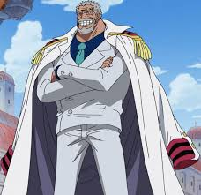
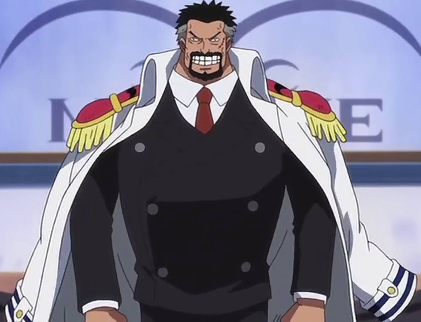
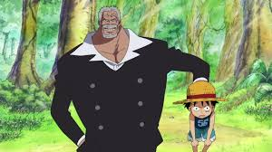
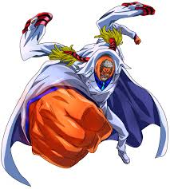
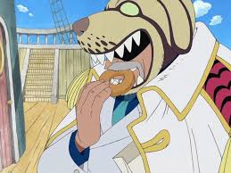
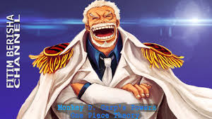
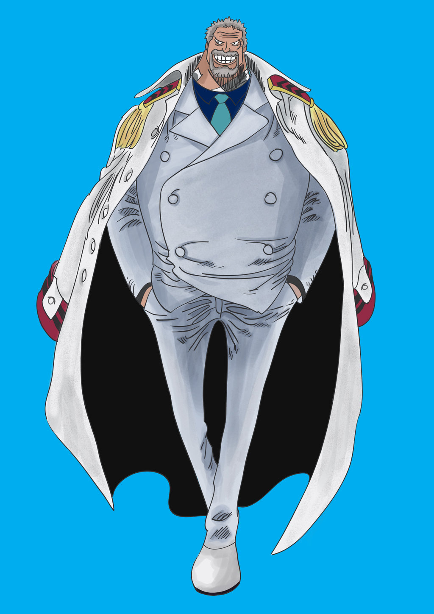
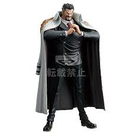

Monkey D. Garp is a Marine vice admiral. He is the father of the infamous Revolutionary Army leader Monkey D. Dragon,[5] the paternal grandfather of Straw Hat Pirates Captain Monkey D. Luffy,[8] and the adoptive grandfather of Portgas D. Ace. He took charge of both Coby and Helmeppo's training. After the war, he became a Marine Instructor to train new recruits, though still retaining the rank of vice admiral.[3] Garp is one of the major figures, along with Sengoku, Shiki, and Whitebeard, from the times when the "Pirate King" was still alive
|  |  |  |  |
|  |  |  |  |